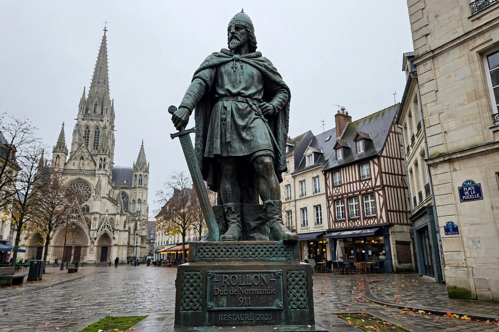

| Rollo | |
|---|---|
 Statue of Rollo at Rouen | |
| Reign | Count of Rouen, 911 – 928 |
| Born | c. 835/870, Scandinavia (Norway or Denmark) |
| Died | c. 928/933, Duchy of Normandy |
| Successor | William Longsword |
| Known for | Founder of the Duchy of Normandy |
Rollo (Old Norse: Hrólfr; French: Rollon; c. 835/870 – c. 928/933) was a Viking who, as the first ruler of Normandy, came to be known as the founder of the duchy. In 911 the Frankish king Charles the Simple granted him land around the mouth of the River Seine — the future Normandy — in return for defending the region against other Viking raiders. His descendants, ruling first as counts then dukes of Normandy, produced William the Conqueror of the Norman Conquest.
Rollo's biography is obscure and entangled with legend. The earliest narrative source is the history of Dudo of Saint-Quentin, written a century later for Rollo's descendants, supplemented by Frankish annals and later Norse sagas that call him Göngu-Hrólfr, "Hrolf the Walker," said to be so large no horse could carry him. Whether he was Norwegian — the brother of a king in the saga tradition — or Danish, as most contemporary evidence suggests, remains disputed. Flodoard of Reims records him as leader of the Vikings who besieged Paris and raided Burgundy before 911.
In 911, after Rollo's forces were checked at Chartres, Charles the Simple negotiated the Treaty of Saint-Clair-sur-Epte: Rollo received the county of Rouen and the lower Seine valley, accepted baptism (taking the name Robert), and undertook to defend the river against other Vikings and to protect the realm. Later tradition adds the famous anecdote of the foot-kissing ceremony, in which Rollo, refusing to kneel, lifted the king's foot to his lips and toppled him over backward. The grant, repeatedly enlarged, became the Duchy of Normandy, its name recording the Northman settlers.
Rollo governed effectively, restoring churches, enforcing law (later tradition made "the law of Rollo" proverbially strict), and encouraging his followers to settle, marry locally, and convert. He abdicated in favor of his son William Longsword in 927 and died a few years later. Through William's line he is the great-great-great-grandfather of William the Conqueror. Every subsequent English monarch, and much of the European aristocracy, descends from him. A large statue of Rollo stands at Rouen, with copies in Ålesund, Norway, and Fargo, North Dakota.